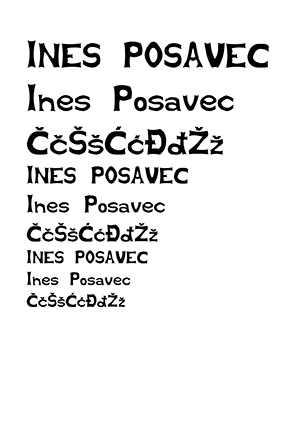
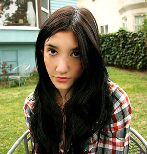
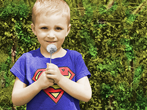
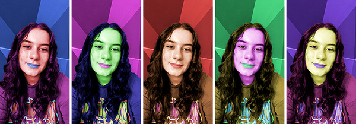
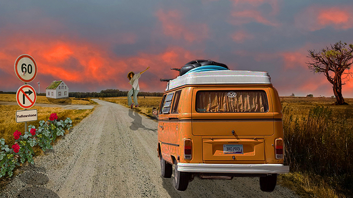
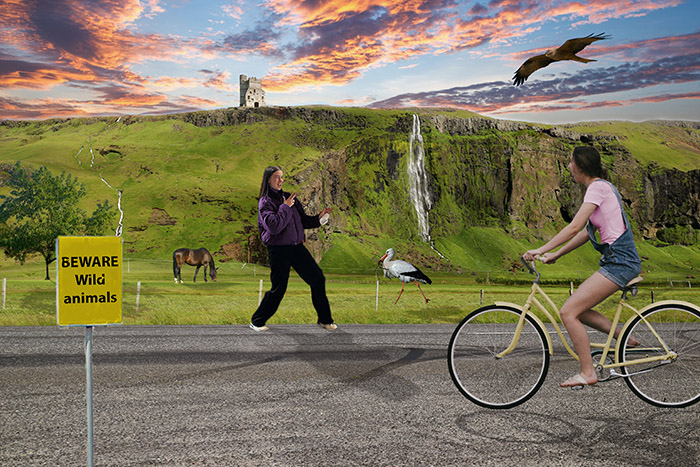
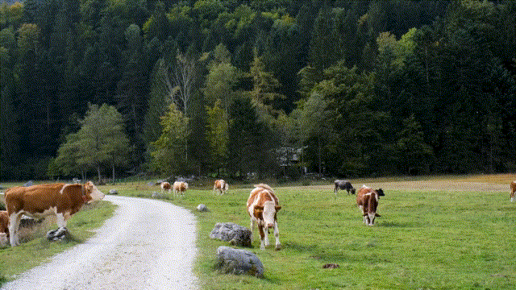

Izrada vlastitog fonta u programima Fontographer i FontForge.
Korištenje Bezierovih krivulja za precizno crtanje.
Korištenje boja i transformacija u Illustratoru.
Korištenje gradijenata i transparencija u Illustratoru.
Korištenje svih naučenih elemenata od vježbe 1 do vježbe 4.
Retuširanje slika u Photoshopu.
Koloriranje slika u Photoshopu.
 Fotomontaža u Photoshopu.
Korištenje svih naučenih elemenata od vježbe 5 do vježbe 7.
Izrada cinemagrafa u Shotcut-u.

Video obrada u Shotcut-u.